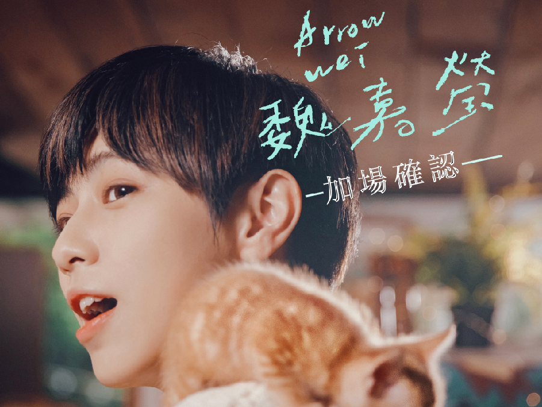
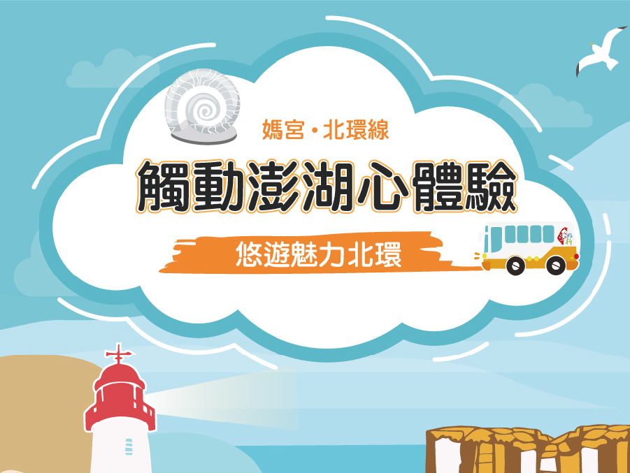
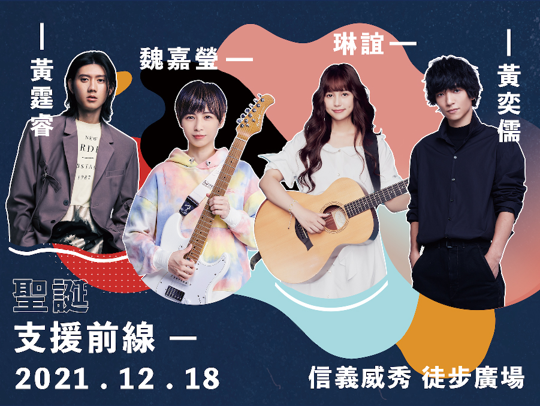
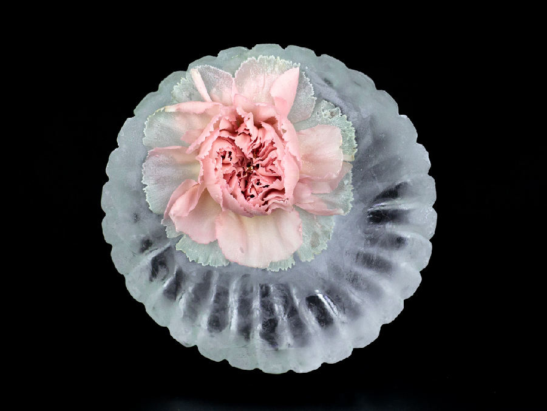
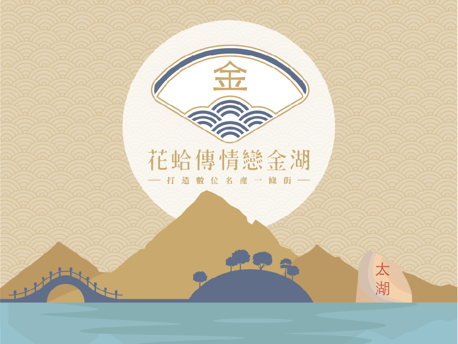
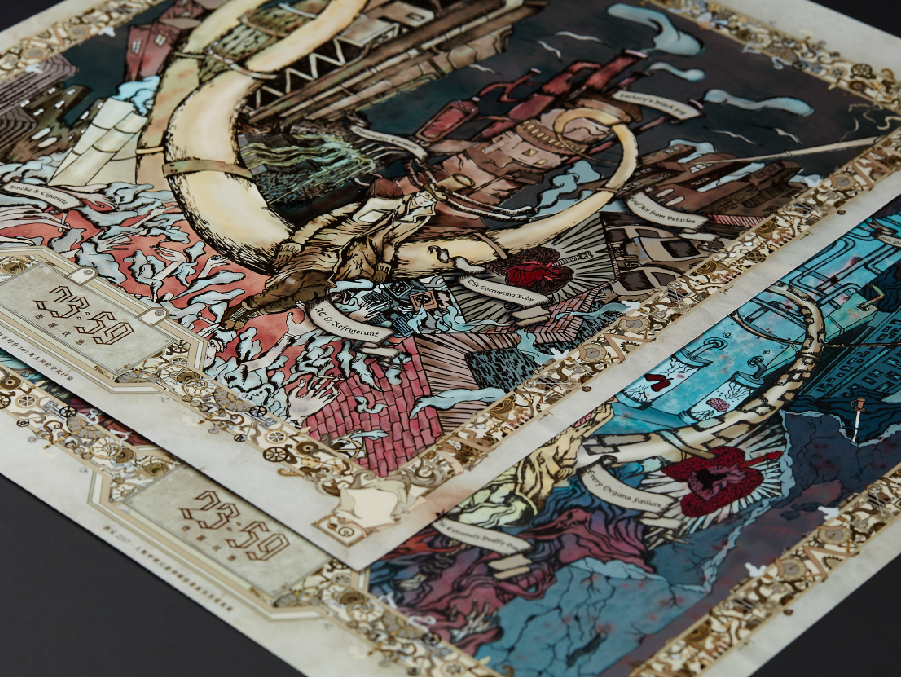
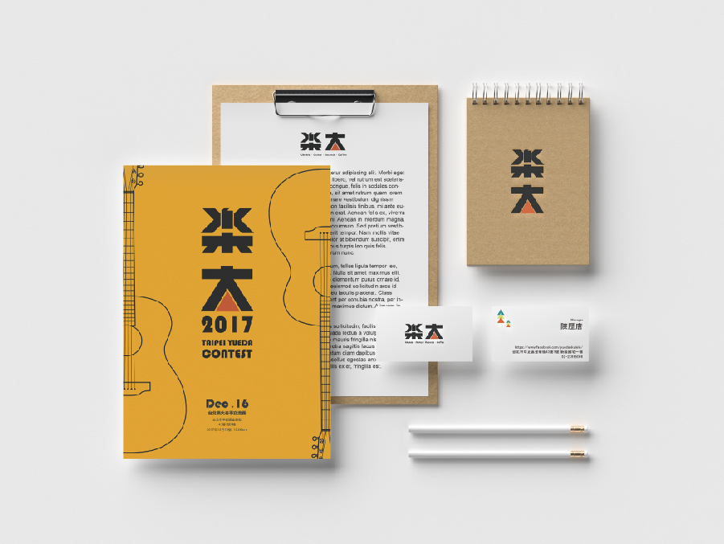
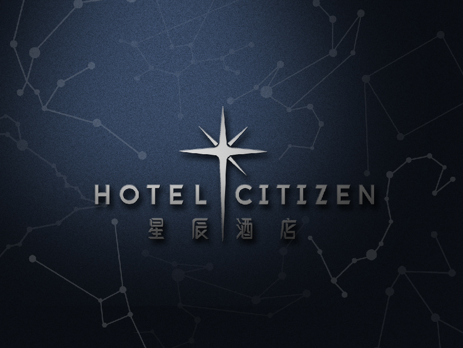
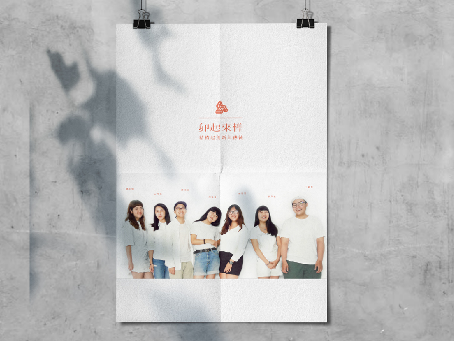
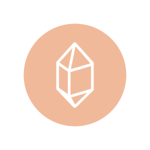

魏嘉瑩-你好嗎？新專同名演唱會海報及周邊
本次作品為歌手魏嘉瑩2021年的新專輯「你好嗎？」所舉辦的新歌同名演唱會海報，台北場加上北中南三場加場共四場。 幼貓就像自己內心的小孩、需要去關心她、照顧她，時不時關心自己的內心：你好嗎？來提醒自己不要忘了那個純真、善良的自己。以此概念作為發想配合粉嫩的顏色為整體色調，同時做了專輯海報明信片等周邊、社群貼文等。
詳細了解
好生凍 好店家 全家行銷物
好生凍、好店＋為全家旗下產業。好生凍為全台首創網購冷凍食品商店街購物平台。好店＋提供網路開店服務，架設品牌官網、電商網站架站，為一線上開店平台。其中有負責每月部分的行銷banner(上架在全家官網及全家APP)、宣傳海報、部分網站維護等等。
詳細了解

澎湖台灣好行、搶先購等行銷物
本專案為政府發包專案，集合了各個澎湖專案：澎湖台灣好行、澎湖搶先購、蔚藍海岸-隘上林投、菊島好食光、澎湖戀戀海味等購物網站、介紹澎湖等平台。其中製作包含網站logo、車體設計、站牌設計、平面、立體輸出宣傳物、網站banner及網站維護等。
詳細了解

聖誕支援前線
聖誕支援前線演唱會為2021年12/18在台北市信義區威秀徒步廣場舉辦的演唱會。參與歌手有魏嘉瑩、琳誼、黃奕儒、黃霆睿。本次想跳脫校園歌唱演唱會的設計，改用比較幾何的線條來表示，配色上也搭配耶誕佳節歡快的氣氛，選用比較活潑的顏色做搭配。
詳細了解

冰封記憶
冰封記憶攝影作品為台藝碩士畢業論文。以客觀又帶有一點詩意的角度來觀看攝影與被攝 者。藉由拍攝冰塊與花的凝結，以此象徵著記憶的封 存。其表現形式以花語來象徵著不同記憶的保存，藉 由本創作研究來探討攝影與記憶、時間與其持續性的關係。
詳細了解

金門花蛤節 行銷物
金門 花蛤傳情戀金湖 為金門縣金湖鎮所舉辦的一個數位購物平台活動網站。主要串聯金湖鎮各個店家，透過店家的產品建立購物平台。為此專案設計了主logo、貼圖、周邊立體立牌、布條、粉專貼文大頭貼、拉霸活動周邊製作、金門APP更新。
詳細了解

23:59
我們重新詮釋聖經中末日四騎士的涵義，轉化為現今國際上迫切需要關注的環境議題。以針對人類造成環境破壞的種種行為，最終將導致世界末日這種誇張化的方式呈現，並透過現在與末日做出對比，警醒眾人思考、並做改變。最終製作成8張大型繪畫視覺並倆倆相對，以現在世界級未來世界做相互對比。
詳細了解

樂大烏克麗麗
樂大烏克麗麗為一間專門販售烏克麗麗與木吉他的溫馨小店，也提供音樂學習的課程。天休憩的一個場所，且店裡的配色溫暖的木頭色，選擇以溫暖的黃色做為主調，並在標誌上輔以一個接近太陽顏色的暖橘色，為標誌增添一抹生機。字體以強烈的粗體，給人一種有朝氣、熱血做音樂的樣子。
詳細了解

星辰酒店
星辰酒店定位在高級酒店，因此標誌使用上以優雅的星星標誌為主，十二星座之圖騰為輔助，搭配簡潔俐落的字體，給予人一種俐落乾淨的感覺。其中包含完整 CI 識別手冊，包含：標誌排列、標誌大小與最小使用規定、企業標準色、標誌起碼空間；也有其輔助圖形及企業輔助色、色彩組合等，均有詳細規範。
詳細了解

卯起來榫
卯起來榫創作於 2016 年的夏天。為了將榫卯的技術保存下來，並成為新的技術與商品，我們創造了這個品牌，透過木藝打造了許多種不同的商品，同時不耗費任何一根釘子。
詳細了解
